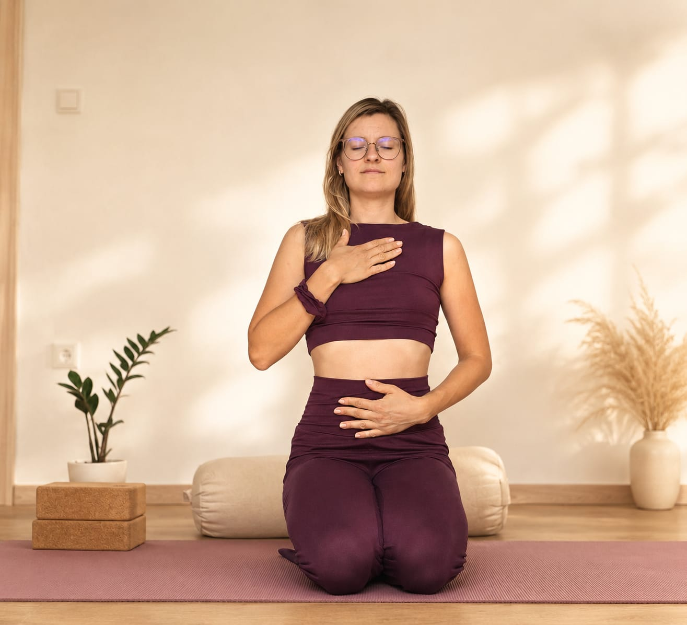

Kurse in der Gruppe
Wohlgefühl Yoga in kleiner, vertrauter Runde. Sanfte Bewegung, lange Haltephasen, viel Ruhe.
Yoga in Breisach am Rhein
Sanftes, achtsames Yoga für alle Level – in kleinen Gruppen und Einzelstunden.
Aktuelle Kurszeiten, Preise und freie Plätze bekommst du direkt bei mir – schreib mir gern.
Wohlgefühl Yoga in kleiner, vertrauter Runde. Sanfte Bewegung, lange Haltephasen, viel Ruhe.
Ganz auf dich abgestimmt – zum Einstieg, in besonderen Lebensphasen oder wenn du dir Zeit nur für dich nehmen möchtest.
Vertiefende Termine zu Atem, Körperwahrnehmung und Entspannung. Termine folgen.

Ein Raum, um bei dir anzukommen.
2019 habe ich gespürt, dass in mir eine große Tiefe steckt. Ich begann, diese Tiefe zu erforschen und mich selbst ganz neu kennenzulernen. Eine besonders wichtige Verbindung zu meinem inneren Kind entstand für mich mit der Geburt meiner Tochter.
Auf diesem Weg habe ich verschiedene Tools entdeckt, die mich bis heute begleiten: Meditation, Atemtechniken und Yoga. Gleichzeitig bin ich zeitweise ziemlich in den Selbstoptimierungswahn gerutscht. Ich wollte mich ständig weiterentwickeln, besser werden und an mir arbeiten.
Doch während all dieser Zeit habe ich mich nach einem Ort gesehnt, an dem ich zur Ruhe kommen und ganz bei mir sein kann. Nach einem Ort, der mir Sicherheit, Geborgenheit und Liebe gibt. Während meiner Mutterschaft wurde dieses Bedürfnis noch stärker.
Die Idee von diesem Ort blieb jahrelang in meinem Kopf. Es hat lange gedauert, bis ich verstanden habe:
Dieser Ort kann nur in mir selbst entstehen.
Denn selbst wenn wir am schönsten Ort der Welt sind, nehmen wir unsere Gedanken und Gefühle immer mit.
Ich begann, meine Gedanken bewusster zu beobachten und sie neu zu schreiben. Ich veränderte mich und lernte, mich jeden Tag ein kleines Stück mehr zu lieben.
WOHLRAUM ist aus diesem Gedanken entstanden.
Meine Intention ist es, dir zu zeigen, wie du dein Wohlgefühl in dir finden kannst. Wie du dein Zuhause in dir selbst entdeckst – mit allem, was da ist.
Ich möchte einen Raum schaffen, in dem du aus dem Alltag raus und wieder zurück zu dir finden kannst. Einen Raum für Ruhe, Körperwahrnehmung, bewusste Bewegung und Begegnung. Einen Raum, in dem du langsamer werden und wieder spüren darfst, was in dir lebendig ist.
Ich lade dich ein, diesen Ort in dir zu erkunden.
Mein Wohlgefühl Yoga verbindet Elemente aus Yin Yoga, Restorative Yoga und somatischer Bewegung.
Dabei geht es nicht darum, eine Haltung perfekt auszuführen oder deinen Körper irgendwohin zu bringen. Vielmehr geht es darum, ihn wieder zu spüren und wahrzunehmen, was sich für dich gut und stimmig anfühlt.
Wir bewegen uns sanft, verweilen, lassen uns tragen und schaffen immer wieder Momente der Stille.
Ankommen. Spüren. Sinken. Sein.
Vielleicht entsteht dabei Entspannung. Vielleicht Leichtigkeit. Vielleicht begegnen dir aber auch Unruhe, Müdigkeit oder ein Gefühl, das gerade gesehen werden möchte.
Alles darf da sein.
Denn Wohlgefühl bedeutet für mich nicht, dass wir uns immer gut fühlen müssen. Es bedeutet, dass wir lernen dürfen, uns mit allem, was gerade da ist, wohl und verbunden mit uns selbst zu fühlen.
Ich möchte dir mit WOHLRAUM einen Ort schenken, an dem du genau das erleben kannst.
Und vielleicht nimmst du dieses Gefühl irgendwann mit in deinen Alltag:
das Gefühl, zuhause zu sein.
Nicht unbedingt an einem bestimmten Ort.
Sondern in dir.
Der neue Stundenplan entsteht gerade. Schreib mir, dann sage ich dir die nächsten Termine und ob noch ein Platz frei ist.
Termine anfragenSchreib oder ruf mich an – für eine Probestunde, aktuelle Termine oder bei Fragen. Ich melde mich zeitnah zurück.